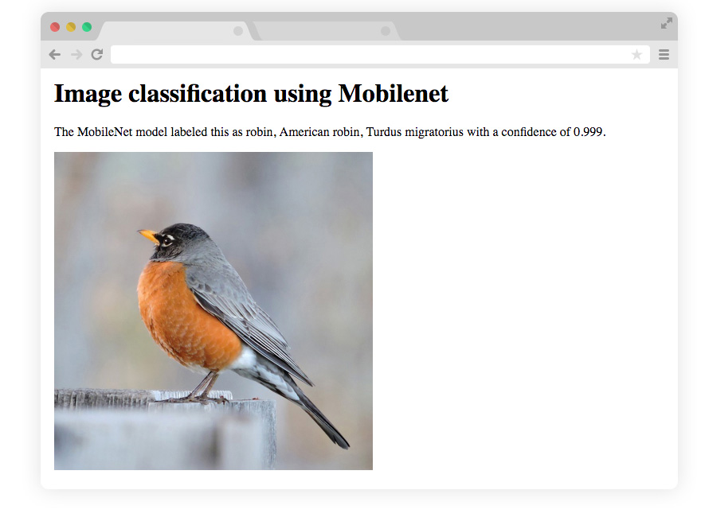

Getting Started
ml5.js aims to make machine learning approachable for a broad audience of artists, creative coders, and students. The library provides access to machine learning algorithms and models in the browser, building on top of TensorFlow.js with no other external dependencies.
The library is supported by code examples, tutorials, and sample datasets with an emphasis on ethical computing. Bias in data, stereotypical harms, and responsible crowdsourcing are part of the documentation around data collection and usage.
ml5.js is heavily inspired by Processing and p5.js.
Setup
Download the latest version of ml5.js and save the following HTML file to your computer:
<!DOCTYPE html>
<html>
<head>
<title>Getting Started with ml5.js</title>
<script src="https://unpkg.com/ml5"></script>
</head>
<body>
<script>
// Your code will go here
</script>
</body>
</html>
That's all! 💥
Creating a simple image classification example
Let's add something more to classify an image
<!DOCTYPE html>
<html>
<head>
<head>
<title>Getting Started with ml5.js</title>
<script src="https://unpkg.com/ml5"></script>
</head>
<body>
<h1>Image classification using Mobilenet</h1>
<p>The MobileNet model labeled this as
<span id="result">...</span> with a confidence of
<span id="probability">...</span></p>
<img src="https://ml5js.org/docs/assets/img/bird.jpg"
crossorigin="anonymous" id="image" width="400">
<script>
// The image we want to classify
const image = document.getElementById('image');
// The result tag in the HTML
const result = document.getElementById('result');
// The probability tag in the HTML
const probability = document.getElementById('probability');
// Initialize the Image Classifier method with Mobilenet
const classifier = ml5.imageClassifier('Mobilenet');
// Make a prediction with the selected image
// This will return an array with a default of 10 options with their probabilities
classifier.predict(image, function(results) {
result.innerText = results[0].className;
probability.innerText = results[0].probability.toFixed(4);
});
</script>
</body>
</html>
Open it in a web browser and after a couple seconds of you should see something like this:

💥🤖